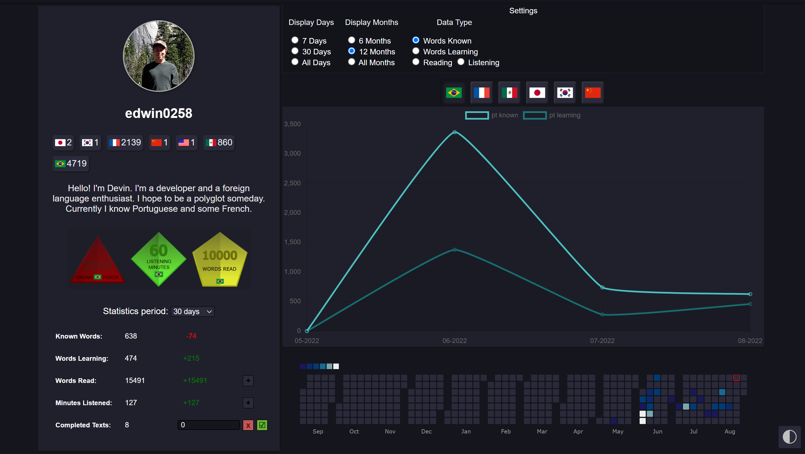
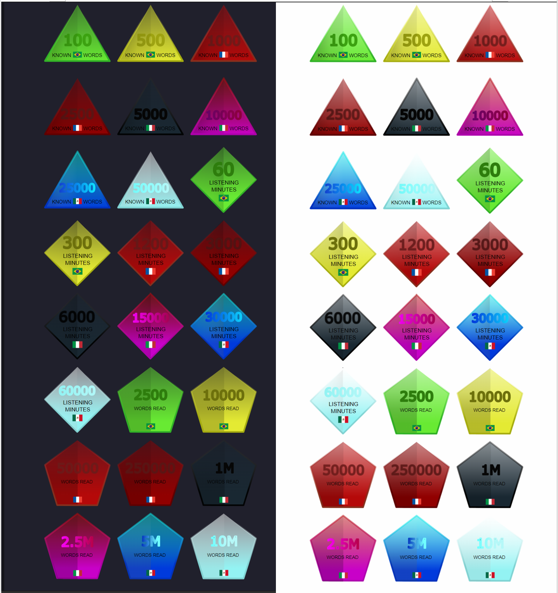
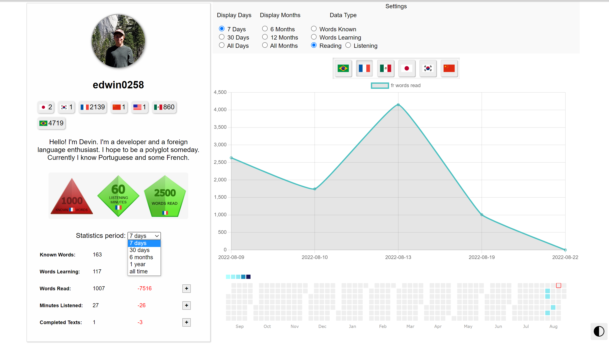
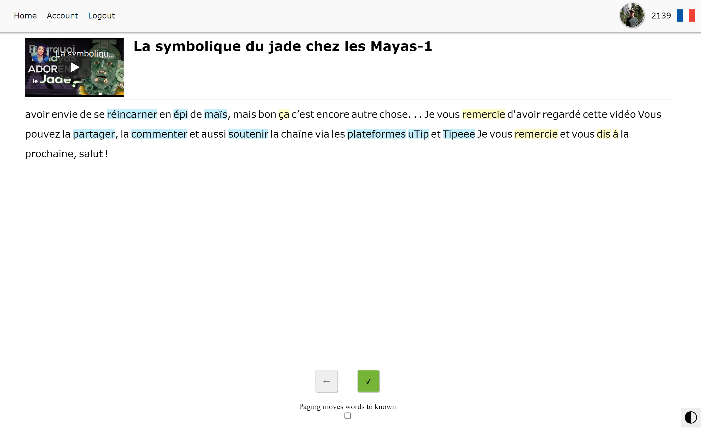
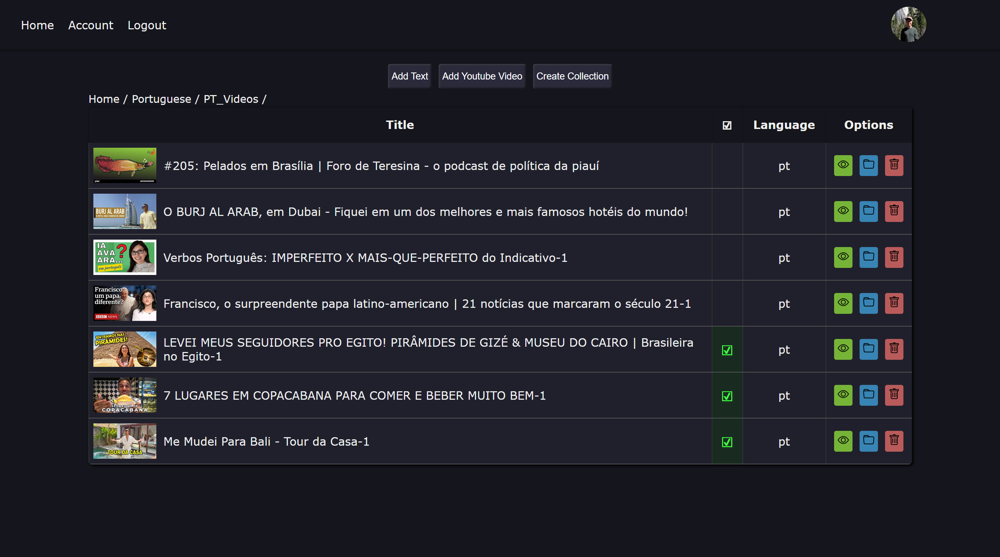

Language Reader Development Progress Update 1
Introduction
In this post I will cover the updates to the foreign language reading application that I have continued developing. If you haven’t read the previous post, Foreign Language Reader Project, I would recommend reading that first as it provides more background information about the application.
Profile Updates
The profile page is where I concentrated most of my effort over the past month. Before, it felt like I wasn’t displaying much information about my language learning progress, and the page felt empty overall for a profile page. Currently, the page feels much more useful. I will list all the changes/additions I made and then talk about some of them in more depth.
Here is the new profile page in dark mode:

Changes/Additions:
- Users can select a period for a chart such as Days, Months, and All Time.
- View time listened, words read statistics
- View a calendar heat map of words known, words learning, words read, and time listened
- Earn badges for milestones in various statistics
- View and Create a profile description
- View a summary of languages a user is learning and their known word counts
- View detailed statistics breakdown with different time period options
- Compare current progress to past progress in various time periods
- Add or Subtract words read, time listened, and texts completed
More Chart Options
The last time I showed the application, a user could only view a chart of their entire history for words learning and known. Now a user can select the time period between days and months. A user can also choose how many months or days to display on the chart. I have also added the ability to view words read and time listened on the chart. These new options give the user more access to their learning history statistics in a chart form.
Badges
In an attempt to add some gamification to the application, I have added badges a user can earn in the application. These badges are displayed on a user’s profile page. Adding badges is a start to adding gamification to the application and making it more fun/interesting to use.
This image shows all of the badges that a user can earn currently:

The badges cover words known, words read, and listening time in each language. The profile page only shows the highest badge obtained in each category in the currently selected language.
Statistics breakdown
Below the badges a user can now view the tracked statistics in different time periods. This table also shows the past period besides the current one for comparison. For example, in the image below, I have read 1007 words in French over the past week, which is 7516 fewer words of reading than last week. The time periods include: 7 days, 30 days, 6 months, 1 year, and all time. There are also + buttons that open a form where users can add or subtract from their words read, minutes listened, and texts completed.

Calendar heatmap
I like the calendar heatmap on GitHub, so I thought I would add the same feature to my application. The data displayed on the heatmap depends on the selected data type and the current language. This heatmap gives the user another chart to use and understand how they are doing.
Reader Updates
The reader view has also received some updates. I think these updates make the reader easier to use and more enjoyable. I will list the changes and additions to this page and then cover them in more depth.
Here is the current reader view in light mode:

Changes/Additions:
- Users can view an embedded youtube video directly in the application
- Add to words read and time listened statistics by completing texts
- Use keyboard shortcuts to carry out most actions within the reader
Embedded youtube video
When viewing a text imported from youtube, the user can now view and listen to the video directly in the application. It also makes it easier to find the video at a later date instead of searching the youtube platform with the title text.
Text completion
A user can now complete a text. The image example shows a green check mark button when the user is on the last page of the text. Clicking this button will complete a text. Completing a text will add the number of words in the text to the user’s words read, and the video length in minutes to time listened if this is the last text in a collection for a video.
Keyboard shortcuts
Users can now use keyboard shortcuts to perform most actions within the reader view. Below is a table of the page actions and their corresponding keys:
| Action | Key |
|---|---|
| Translate Word | t |
| Listen to Word | s |
| Exit Word Widget | q |
| Open Next Word Widget | d |
| Open Previous Word Widget | a |
| Set Word Status | 1, 2, 3, 0, r |
| Next Page | g |
| Previous Page | f |
Main View Updates
I also added a new column for texts in the main text selection view that tells a user if a text has been completed before. A checkmark indicates a text has been completed at least once.
Here is an example within my Portuguese youtube video collection where there are three texts that I have completed:

Conclusion
The past month has gone well in terms of development progress. I’m excited to continue improving the application and making something that I enjoy using for a long time.
There are still many things I still want to do and improve with the application that I didn’t mention in my first post:
- More JavaScript testing
- Ability to export learning statistics and words
- Ability to add more meta-information to texts and collections
- Vocab Review ability
- Text completion and badge awarding pages
- Progress bar in reader view
- More reader text aesthetic options such as text size and color
- Option to navigate to the next text on previous text completion
- View a list of other texts in the current collection inside the reader
Thanks for reading!
Until the next update post,
Devin Miller